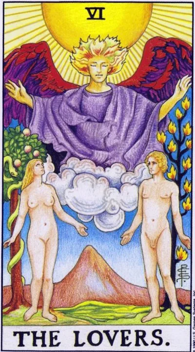

Старший аркан · VI
VIВлюблённые
The Lovers
Выбор сердца, сделанный честно: союз, в котором любовь совпадает с ценностями, а решение «да» одному человеку одновременно произносят ум, чувства и поступки без оглядки назад.
Архетип и основное значение
Адам и Ева стоят под крылами архангела Рафаила — целителя; позади Евы древо познания со змеёй, позади Адама — двенадцать огней древа жизни. Карта Уэйта — не столько о романтике, сколько о выборе: сознательное предпочтение одного пути, одного человека, одной системы ценностей перед всеми прочими.
Близнецовская природа аркана добавляет второй сюжет — встречу противоположностей. Мужское и женское, сознание и тело, свобода и близость соединяются не стиранием различий, а их согласием. В раскладе Влюблённые означают гармонию, которая наступает, когда решение принято без самообмана: сердце, разум и действие смотрят в одну сторону.
В быту
День выбора между «надо» и «хочется» — карта советует слушать второе, если первое не является вопросом безопасности. Приятны встречи с друзьями, примирения после ссор, совместные ужины и покупки для двоих. Хороший момент, чтобы определиться с решением, которое вы долго переносили: варианты изучены, пора сказать «да» одному и «спасибо, нет» другому. Вечер отдайте близким — телефон подождёт.
Работа и карьера
В работе Влюблённые часто означают выбор предложения: две позиции, два заказчика, два пути развития — и оба выглядят достойно. Выбирайте совпадение с ценностями, а не только цифру: карта предупреждает, что компромисс с собой дорого обойдётся позже. Благоприятны партнёрства, совместные проекты, сделки, выгодные обеим сторонам. Коллеги настроены доброжелательно; переговоры лучше вести в логике «нам обоим должно быть выгодно», а не в борьбе за последнее слово.
Отношения
Главный сюжет — встреча значимая: родство душ, при котором рядом с человеком хочется становиться лучше, а не удобнее. Для пар это период гармонии и решений — съезжаться, сочетаться браком, планировать детей: союз получает благословение. Для одиночек — вероятность судьбоносного знакомства, часто через друзей или в поездке. Теневая сторона — треугольники и искушения: карта честно показывает, что любой выбор чего-то стоит, и советует не пытаться усидеть на двух стульях.
Здоровье
Карта гармонии хорошо сказывается на состоянии: тело откликается на радость, хронические реакции затихают, когда разрешается внутренний конфликт. Психосоматика Влюблённых — болезни от невысказанного и непрожитого выбора: пока сердце в двух местах, симптоматика держится. Помогают парные практики — танцы, йога вдвоём, прогулки за длинным разговором.
Эзотерическое значение
Путь Зайин, «меча», соединяет Бину и Тиферет: выбор всегда отсекает, и в этом его сила. Архангел Рафаил делает аркан картой исцеления через союз — когда противоположности признают друг друга, уходит напряжение, питавшее болезнь. В алхимии это священный брак, соединение ртути и серы, рождающее философский камень.
Рассогласование: ценности разъехались, выбор откладывается на потом, а соблазн предлагает желаемое в обход совести — карта требует честной определённости вместо усидеть на двух стульях сразу.
Архетип и основное значение
Перевёрнутые Влюблённые — рассогласование. Внешне пара может сохраняться, но ценности уже разъехались: разные цели, разные истины, разговоры только о быте. Либо это избегание выбора — человек держит два варианта открытыми, не отдавая себя никому, и называет такую позицию свободой.
Классический третий сюжет — соблазн: ситуация, где хочется взять желаемое в обход собственных принципов. Карта предупреждает: цена такого выигрыша — самоуважение, а оно дороже. Аркан предлагает честный аудит: где я живу не свою жизнь? Разрыв, совершённый по правде, лечит быстрее союза, поддержанного ложью.
В быту
В быту день внутренних качелей: хочется противоположного одновременно, решения откладываются, а мелкий выбор — что съесть, куда пойти, кому ответить — раздувается до мучительного. Проверьте, не живёте ли вы под чужим сценарием: расписание, составленное другими, сегодня особенно раздражает. Хороший ход — маленькое честное «нет»: одному человеку, одной привычке, одному навязанному делу.
Работа и карьера
На работе карта указывает на конфликт ценностей: проект прибыльный, но неприятный; команда хорошая, но продукт стыдный; оффер большой, но компания чужая. Принимать такое предложение из страха пустоты — значит заложить бомбу под собственную мотивацию. Возможны и интриги: союз против коллеги, флирт с заказчиком ради контракта — краткосрочный выигрыш, долгосрочный ущерб репутации.
Отношения
В отношениях перевёрнутые Влюблённые — охлаждение и разлад: близость держится на привычке, страсть ушла к третьему лицу или в фантазию, а разговор о главном постоянно откладывается. Возможна ситуация выбора между двумя людьми — или между отношениями и свободой, которую человек боится потерять. Измена здесь не всегда постель: чаще это эмоциональный уход, когда сердце уже переехало, а вещи ещё нет. Аркан требует честности: определиться, даже если определённость болезненна, — она всё равно лечит лучше неопределённости.
Здоровье
Телесно внутренний конфликт отражается прежде всего в сердце и нервной системе: аритмии на фоне тревоги, скачки давления, бессонница с мыслями «а вдруг». Хроническая нерешительность держит организм в постоянной боевой готовности — отсюда усталость, которая не проходит после выходных. Помогает снижение внутреннего раздвоения: один главный приоритет, один честный разговор, одна принятая цена. Практикуйте то, что соединяет ум и тело, — массаж, танец, дыхание с акцентом на длинный выдох.
Эзотерическое значение
Духовно перевёрнутый Зайин — меч, повернутый на себя: выбор, не сделанный вовремя, режет того, кто медлит. Карта указывает на разрыв между путём и жизнью: человек практикует возвышенное, а повседневная жизнь остаётся фальшивой, и эта щель съедает силу. Возможна и работа с тенями союза — проекциями на партнёра, когда в него любят собственную фантазию. Практика исцеления — исповедь перед собой: назвать каждому своему желанию цену и решить, платишь ли ты её сознательно.
🌿 Кратко и просто
Основная идея
Несмотря на название, Влюблённые — прежде всего карта выбора. Любовь здесь действительно присутствует, но важнее другое: человек должен самостоятельно решить, чего он хочет, и принять ответственность за последствия.
В отношениях
Симпатия, влюблённость, любовь и сексуальное притяжение. В отличие от Иерофанта, партнёра здесь выбирают не потому, что «так принято», а потому что именно этот человек нравится лично тебе.
Работа
Общие интересы, команда, партнёрство, работа с человеком, который дополняет тебя своими навыками.
Саморазвитие
Научиться выбирать самостоятельно. Не просто получить знания от учителя, а понять, какие из них действительно твои.
Теневая сторона
Выбор может превращаться в протест ради протеста: «все так делают, значит я буду наоборот».
Особенность школы
Влюблённые связаны с третьим домом и Прозерпиной — образом одного выбранного зерна среди множества. Правильный выбор невозможно сделать за другого человека.
📜 Развёрнуто — выжимки лекций
Суть карты
Это прежде всего карта выбора, а не романтики: «говорит она больше о выборе». Само название он берёт в английской семантике — просто «два человека, которые любят друг друга», тогда как русские «влюблённые» чересчур сентиментальны, а «любовники» всегда негативны. Ядро сюжета — осознанный выбор между добром и злом: есть завет, которое нарушать нельзя, но человек пробует запретный плод, получает собственное знание и взрослеет. Грехопадение у него не провал, а обязательная ступень пути — только вкусив лично, ты точно знаешь, что твоё, и отвечаешь за выбор сам.
Прямое положение
- - Личная жизнь. Симпатия — выделяешь человека из толпы одинаковых ровесников; дальше влюблённость и любовь: «любовь тут присутствует обязательно». Мужчина и женщина ощущаются как противоположности (по физиологии и характеру), но пара равных — «как солнце и луна, ни один не главнее». Под Иерофантом супруга выбирают по традиции, как мама с папой сказали, а здесь любишь за что-то конкретное и личное. Карта может выпасть буквально на секс и развитие в сексуальных практиках — двое обнажённых на карте он читает как прямой намёк.
- - Работа и социум. Искренняя связь на общих интересах: вы с человеком «близнецы», обоим хочется одного и того же. Командный дух, корпоративность (воины ходят в одной форме), сопричастность делу, увлечённость и ответственность. С партнёром по этой карте можно договориться и заговорить на одном языке; хорошо проявить свою «фишку» — выделяться качеством, уметь лучше других. Тема напарников: равный коллега с иной специализацией, вы дополняете друг друга.
- - Финансы и имущество. Личный выбор по вкусу и опыту — вкладывать туда, что уже пробовал и понимаешь. Покупая дом — пожить пару дней в каждом районе («снять квартиру в соседнем доме»); машину выбирать по собственному опыту, а не словам продавца. Профессию делать из своей особенности: твои шоколадные торты с фигурками — то, за что готовы платить.
- - Саморазвитие. Принятие своей природы: «если тебе нравится быть бородатой женщиной — твой выбор, но ответственность на тебе». Действовать естественно правильным для себя образом, активно выбирать и погружаться в интересное. Возрастная рамка — третий дом, 14–21 год: из общего массива иерофантова обучения выделить своё направление — физики или лирики — и к 21 году определиться. Учиться выбору лучше среди единомышленников — вроде форума автолюбителей перед покупкой машины.
Негативное значение
- Формула школы: карта «слишком жёсткая» и в негативе «приобретает негатив». Конкретика минусов:
- - Отрицание запретов из принципа: «все любят — а я назло не буду», «баба-яга против» всего общепринятого, из принципа «понадкусываю запрещённое».
- - Принцип насилия и завышенные эмоции: добиться своего напором.
- - Русское слово «любовник» само тянет треугольник: тайная связь, нарушенный завет и обещание, которая «ломает семью одним присутствием». Но всё зависит от контекста: если муж опостылел, а явился «сиятельный, как Аполлон», — карта для кверента скорее радостная.
- - Непринятая обществом истинная природа: человеку приходится прятать себя — «грустный оттенок» карты (он говорил о клиентах гомосексуальной ориентации: проблемы у них те же, что у любой пары, только желание скрываемое).
Акценты и фишки школы
- - Его астрология: карта стоит в третьем доме (Близнецы) после Иерофанта-Меркурия; её планета — Прозерпина (Персефона): «одно маленькое зернышко», выбранное из поля Деметры. Метафора тапочек: в доме много тапочек, но твои — те, что подошли лично тебе.
- - Два дерева, о которых все забывают: древо жизни (мужская огненная символика) с 12 плодами за спиной Адама — 12 знаков зодиака, 12 желаний живого существа; древо познания добра и зла за спиной Евы.
- - Ангел над парой — Святой Дух или карма, который «делает за нас этот выбор»; раньше на его месте был Амур, стреляющий в мужчину. Змей — «Люцифер, несущий знание», провокатор опыта.
- - Нагота в Таро — истинность: фигуре незачем прятаться, «я какая есть»; сон о том, что идёшь по городу голым, — желание раскрыть себя правдиво.
- - Гора — движение вверх и наращивание личного опыта, намёк на Козерога. При этом «иногда сигара — это просто сигара»: ловить лишние детали в рисунке — «натягивать сову на глобус», главное — целостное чувство карты.
- - Мифология близнецовости: Диоскуры (один полубог, другой человек — разумная и божественная половинки; «день на небе — день на земле»), Артемида и Аполлон (луна и солнце равного размера, черты обменялись), Ромул и Рем с похищением сабинянок (закрепление пространства требует силы — тема законного насилия), Каин и Авель.
- - Марсельское Таро: юноша между двумя дамами, куда всадит стрелу Амур — туда и влюбишься; это «выбор без выбора». Уайт добавил символику грехопадения: человек свободен знать правила и нарушить их ради сердца. «Правильный выбор — это веление сердца»: любить кого-то нельзя назначить.
- - Психология этапа: грехопадение = подростковый выход из родительского «рая» (Иерофант — школа «для всех», институт — уже свой выбор); ссылка на неолитическую революцию и формулу «знание — боль»: кто не ошибается, тот не учится и опыта не накапливает.
- - Современная культура: «Королевство кривых зеркал» (послушали «неправильных иерофантов» вместо театрального — жизнь не сложилась), «Приключения Электроника» (живое и железное, как солнце и луна), голливудские фильмы о напарниках (разные характеры, общий труд, сознательное нарушение закона ради блага), «Секретные материалы» (Скалли — логика и «королева мечей», Малдер — интуит; они как Аполлон и Диана, равны), «Анна Каренина» — классика выбора мужа и любовника, где Левин воплощает иерофантовский правильный уклад.
- - О Сергее Савченко отзывается спокойно-иронично: «чистый близнец», очень много информации, по-близнецовому разбросанной, порой поверхностно — но каждый волен выбрать свой путь в Таро, это ведь тоже карта Влюблённых.
- - Метод школы: сначала чувствовать карту, а не конспектировать («заучить значения можно и из книжки»); лекции полезно пересматривать после живой практики раскладов.
Ключевые слова
- выбор, личный опыт, завет, грехопадение, запретный плод, Прозерпина, веление сердца, истинность, увлечённость, ответственность за свой выбор
- ---